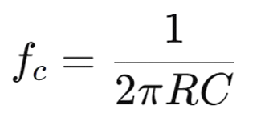
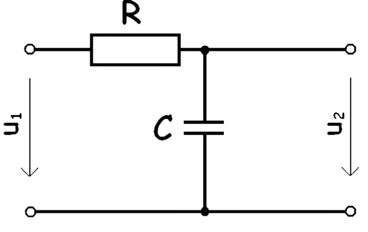

Teorie
Dolní propust je elektrický filtr, který propouští signály o nízkých frekvencích a potlačuje signály o vysokých frekvencích. Jejím hlavním úkolem je odstranit vysokofrekvenční rušení ze signálu a zachovat jeho pomalu se měnící složku.
Základní RC dolní propust je tvořena odporem R a kondenzátorem C. V tomto zapojení je výstupní napětí odebíráno z kondenzátoru.¨ Pro nízké frekvence má kondenzátor vysokou impedanci, a proto se na něm objeví téměř celé vstupní napětí. Při vyšších frekvencích impedance kondenzátoru klesá a vysokofrekvenční složky signálu jsou výrazně tlumeny.
Důležitým parametrem horní propusti je mezní frekvence 𝑓𝑐. Při této frekvenci klesne amplituda výstupního napětí na přibližně 70,7 % vstupní hodnoty, což odpovídá zesílení −3 dB. Mezní frekvence je dána vztahem:
Dolní propusti se velmi často používají v napájecích zdrojích k vyhlazování napětí, v měřicí technice k potlačení šumu a v audiotechnice pro omezení vysokých frekvencí. Uplatnění nacházejí také v systémech zpracování signálů, kde je potřeba oddělit pomalu se měnící signál od rychlých změn.
